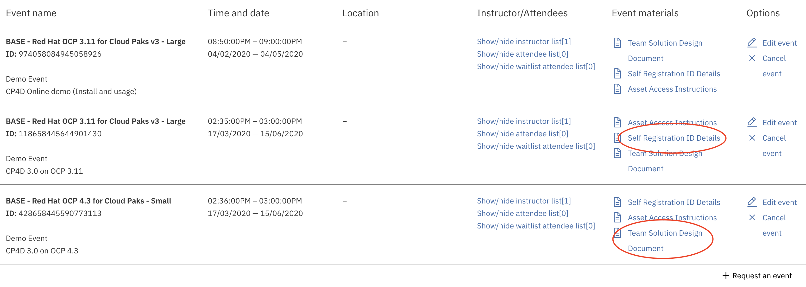

Setting up your TEC envinronment
TEC allows you to get a test envinronment for up to 90 days. This is pleny enough to test and use CP4D. If you need an environment for a longer period, try to get one in FYRE. I asked for one many month ago and I am still waiting :(
TEC request
TEC is available at https://iccve.uk.ibm.com
Login with your IBMid

Once authenticated, click on "Requested Events" and then on "+ Request and event"


Select Demo
Choose "BASE - Red Hat OCP 3.11 for Cloud Paks v3 - Large" Enter a name for your environment "CP4D 3.0" in my example Select the end date, a maximum of 90 days is allowed and you can extend the period. Be careful, there is no warning before closing an environment.

You will get a bunch of email with login and password for VPN and letting you know the environment is available.
Information
All information are located in the TEC site.

- "Asset Access Instructions" document includes all information on how to access your clluster, includiing IP addresses.
- "Team Solution Design Document" documents includes all information on OpenShift cluster : size, accesses, ...
VPN Access
First you need to connect to the TEC VPN.
Go to the website to change the default password sent : https://vpn.hursley-gcc.uk.ibm.com/
Then you can connect directly to the VPN through AnyConnect. I had some issue downloading it from the website and as IBMer we don’t need to, you can enter directly the right address : https://vpn.hursley-gcc.uk.ibm.com/

Connect with VNC to NFS server
NFS Server IP is the first on in the list you got from emails.
Tip on MacOS : use the client from RealVNC : https://www.realvnc.com/en/connect/download/viewer/
VM Management
VM Management is done with VMWare
Go to https://tec-hur-vcs2.esx.tec.hur.cdn/ and use your TEC credentials. Use the HTML version and go to the VM level.

From there you can start and stop VM to save resources.
SSH Connexion
SSH connexion is working from scratch, nothing to do.
Login / password is root / passw0rd
I recommend using SSH keys and changing the root password.
OpenShift Console
You can access OpenShift Console directly from your PC.
-
Update your /etc/hosts file add a line:
<2nd IP address> ocp-master.tec.uk.ibm.com ocp-master.tec.uk.ibm.com console.apps.tec.uk.ibm.com zen-cpd-zen.apps.tec.uk.ibm.comReplace <2nd IP address> with the second IP adress in the list you got in one of the emails.
-
Open a browser (from VNC or your workstation)
- https://ocp-master.tec.uk.ibm.com:8443
- Passwords:
- admin / passw0rd
- root / passw0rd
Sources
Documentation from